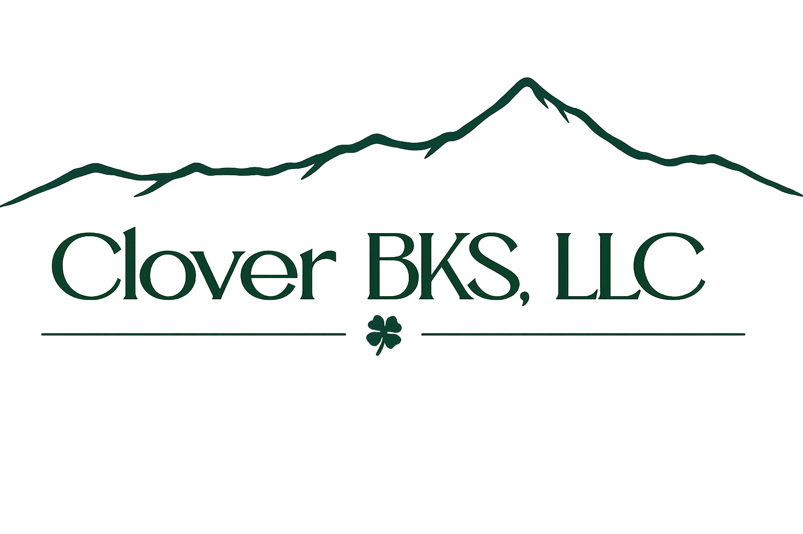

Simple systems. Clear numbers. No confusion.
Bookkeeping support for small businesses and independent workers across Southwest Colorado and the Four Corners region.
Schedule Free ConsultationTalk through your situation and get clear next steps.
Meet by phone, video, or in person for local clients.
Gig workers, contractors, trades, and local service businesses.
B.I.T.E.™ Method
Clean bookkeeping systems and organized financial records.
Track costs, products, or supplies clearly.
Stay prepared with records that make tax filing easier.
Consultations and checkpoints that keep businesses moving forward.
The B.I.T.E.™ framework is part of a larger financial systems project developed through Nightfield LLC.